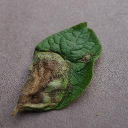
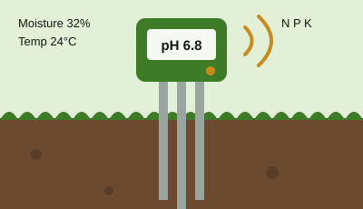

AI Disease Detection
Upload a leaf photo and get a likely disease name, like late blight, along with first steps to take.
AI for smarter farming
Simple tools that turn a leaf photo and a soil reading into advice a farmer can use the same day.
Learn MorePrakriti Innovations is an agriculture technology startup from India. Many farmers notice a spot on a leaf or a weak plant but have no quick way to find out what is wrong. By the time they reach an expert, the problem may have already spread across the field.
Our goal is to close that gap. A farmer can take a photo of a leaf, and our AI model checks it for common plant diseases. Our smart soil probe measures moisture, temperature, pH, and nutrient levels, and the results show up on a simple dashboard in English or Hindi.
Read More
Upload a leaf photo and get a likely disease name, like late blight, along with first steps to take.

A low-cost sensor that reads soil moisture, pH, and NPK levels so farmers know what the field needs.
Easy guides for common crops in India, such as rice, wheat, and maize, with prevention tips.